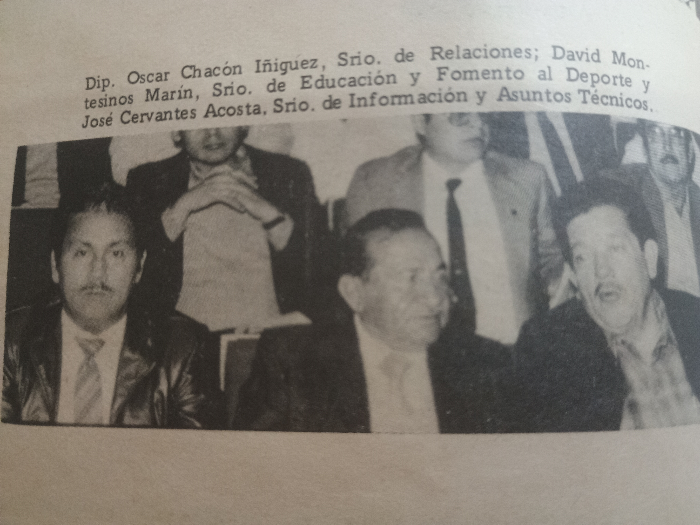
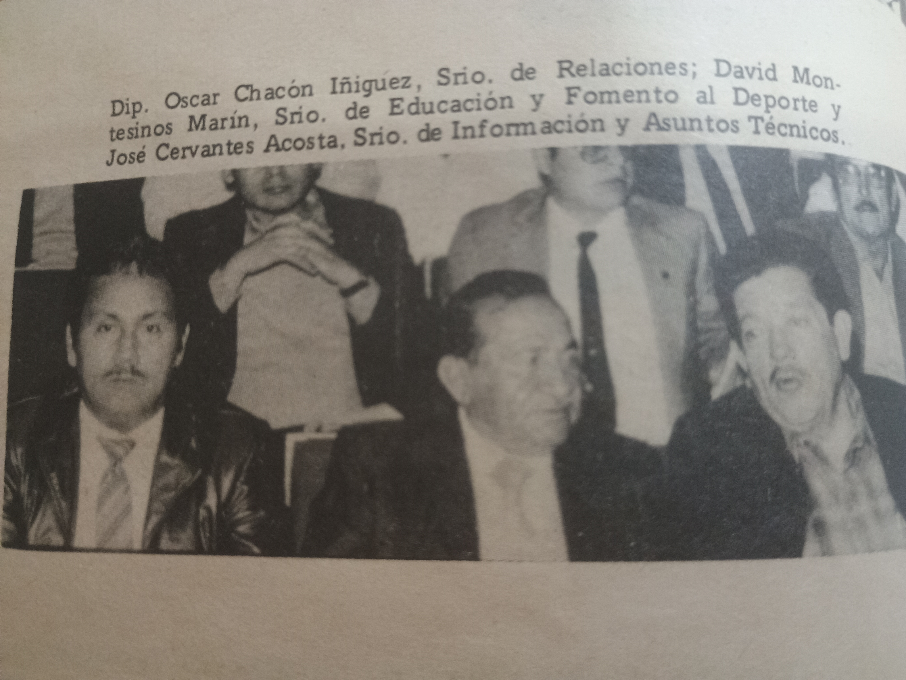

CARACTERISTICAS DEL CONJUNTO HABITACIONAL "ADOLFO RUIZ CORTINEZ" TRES VALLES,VER.
El conjunto habitacional se encuentra ubicado al sureste del estado de Veracruz. El terreno de la Colonia Obrera Adolfo Ruiz Cortinez se ha proyectado para alojar 350 viviendas, en una superficie de 192,229.40 M2.
URBANIZACIÓN DEL CONJUNTO.
La localidad se encuentra comunicada por la carretera federal.Tinajas,Cd.Alemán. en el estado de veracruz, de donde se deriva el acceso por un Boulevard cuyo recorrido nos lleva al centro del conjunto. Como solución complementaria en materia vial,el conjunto contempla una serie de avenidas y calles que integran a la vialidad principal que resuelven el problema de circulación anterior. Asímismo es importante señalar la construcción de andadores y banquetas para mayor seguridad peatonal.
EQUIPAMIENTO URBANO.
El conjunto contempla zonas perfectamente destinadas al mejoramiento de la arquitectura del paisaje como son:
Además,se contemplan áreas de servicio en las que en un futuro próximo, se construiran locales comerciales, para mayor comodidad de los obreros de la familia azucarera, así como un local sindical.
DATOS BIBLIOGRAFICOS
DON ADOLFO RUIZ CORTINES,quien fuera Presidente Constitucional de la Republica de 1952 a 1958, nació en la Ciudad y Puerto de Veracruz el 30 de Diciembre de 1890.
Este era un hombre de caracter firme y de convicciones inquebrantables, conocia el mundo que lo rodeaba. así como las virtudes y debilidades humanas y consideraba era deber indeclinable del gobernante, tratar de comprender los niveles de la conducta individual y colectiva. Era un varón, singular que perteneció a la ilustre estirpe de esforzados varones que con fé republicana, pusieron al servicio del país en todo momento su devoción y su inquebrantable rectitud y sapiencia de Gobernante y exalto los grandes forjadores de nuestra nacionalidad y mantuvo como norma de conducta su firme fé en los gloriosos destinos de México, austero y desprovisto de vanidad personal. Y así sembró durante su periodo presidencial del que cual cuando concluyó, se retiró discreto, seguro de que la historia haría al mejor balance de su actuación. Siendo una figura nacional para lo profundo e íntimo veracruzano, se retiró al Puerto en donde fallece el 3 de Diciembre de 1973.
Su iconica frase fue:
"NO SIEMBRO PARA MI, SIEMBRO PARA MÉXICO"

El Sindicato de Trabajadores de la Industria Azucarera y Similares de la República Mexicana y en atención a que la Organización Sindical siempre recibió apoyo, comprensión y ayuda a sus programas sociales, determinó denominar con el nombre de DON ADOLFO RUIZ CORTINES,a este conjunto habitacional en Tres Valles,Ver, compuesto por 350 casas destinadas a los compañeros trabajadores miembros del sindicato de la sección lX y con ello pagar en forma muy modesta la deuda de gratitud y reconoconocimiento al ex-presidente DON ADOLFO RUIZ CORTINEZ,coterráneo excepcional de los veracruzanos.

CARACTERISTICAS DEL TERRENO
LUGARES ANTES Y DESPUÉS
JARDIN DE NIÑOS "FRANCISCO LEÓN DE LA BARRA" Y ESCUELA PÚBLICA "JOSE MA. MARTINEZ RODRIGUEZ",FUNDADAS EL 17 DE AGOSTO DE 1983.
ESCUELA SECUNDARIA "TECNICA INDUSTRIAL NO.112",INICIADO OFICIALMENTE EL DIA 17 DE SEPTIEMBRE DE 1986.
AUDITORIO Y OFICINAS ADMINISTRATIVAS CON UNA BIBLIOTECA PUBLICA FUNDADA EL DIA 26 DE NOVIEMBRE DE 1987.


 


Puedes contactarme por aqui para platicar un rato :)